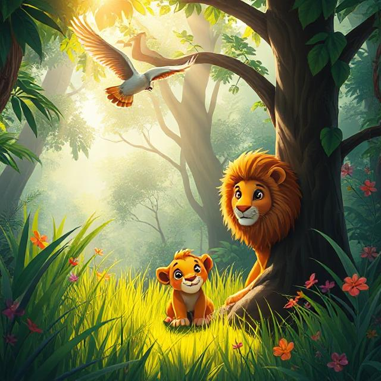

As the golden sun dipped behind the hills, the forest stretched and sighed.
Night had arrived.
Under a blanket of deep blue, the trees swayed gently in the cool breeze.
Stars peeked out, one by one, like tiny lanterns hanging in the sky.
The animals of the forest gathered, just like they did every night.
Owl flapped quietly to his favorite branch, blinking his wide eyes.
“Night is the time for listening,” he whispered.
Fox padded through the grass, her red coat glowing under the moonlight.
Deer stepped softly from behind a tree, ears alert, eyes calm.
Tiny mice scurried under leaves, and a hedgehog waddled by, humming to himself.
Above them, a flock of little birds — not ready for sleep — perched on a glowing branch.
They chirped softly, their songs like lullabies.
“Tell us a story,” said the smallest bird.
The animals paused. Even the breeze seemed to hush.
So Owl spoke.
He told them of a time when the stars were not in the sky, but hidden inside the hearts of kind animals.
He said that each star was placed in the sky by a creature who showed kindness, courage, or love.
“And when we are gentle, and brave, and kind,” Owl said, “the stars above shine just a little brighter.”
The animals listened with wide eyes.
The birds grew still.
Even the leaves stopped rustling.
Then — high above — a new star twinkled.
“Was that… because of us?” the little bird asked.
Owl smiled. “Maybe it was.”
As the forest fell into a hush, one by one, the animals curled up in cozy nests, hollows, and dens.
The birds tucked their heads under their wings.
The stars kept watch, blinking kindly down.
And in the soft silence of the forest, only one thing could be heard:
Peace.